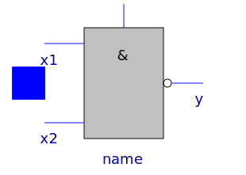
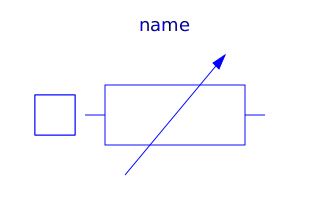
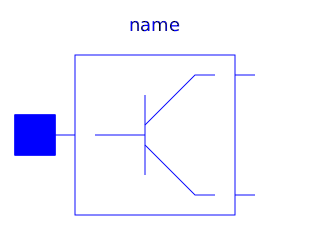
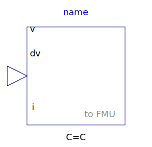
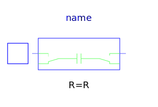
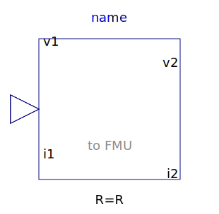
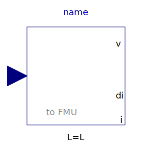
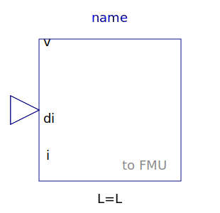
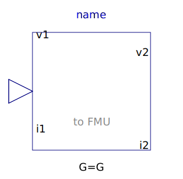

This package contains some utility components used by package examples. These components are auxiliary components that should not be used like true MLS components since they are designed the purpose of the examples only, not for common use.
| Name | Description |
|---|---|
|  Nand | CMOS NAND Gate (see Tietze/Schenk, page 157) |
|  NonlinearResistor | Chua's resistor |
| Ideal switch with resistance | |
|  Transistor | Transistor with resistance an capacitance |
|
|
Input/output block of a direct capacitor model |
|  InverseCapacitor | Input/output block of an inverse capacitor model |
|  SwitchedCapacitor | Switched capacitor which can represent a positive or negative resistance |
|  Resistor | Input/output block of a resistance model |
|  DirectInductor | Input/output block of a direct inductor model |
|  InverseInductor | Input/output block of an inverse inductor model |
|  Conductor | Input/output block of a conductance model |